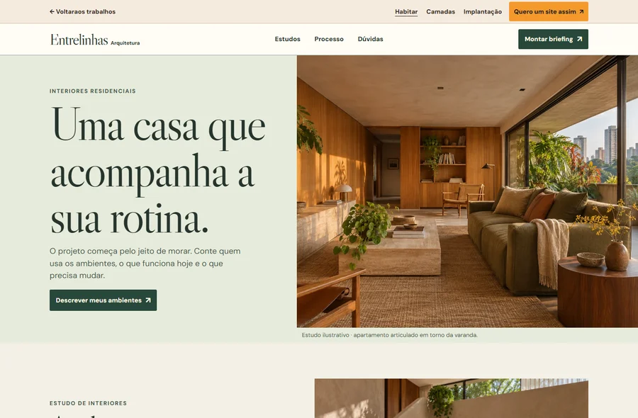
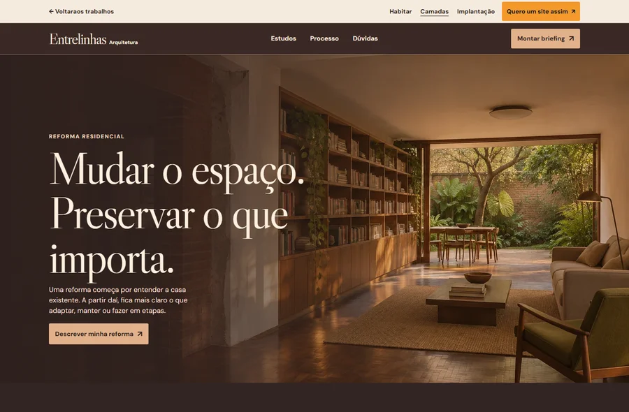
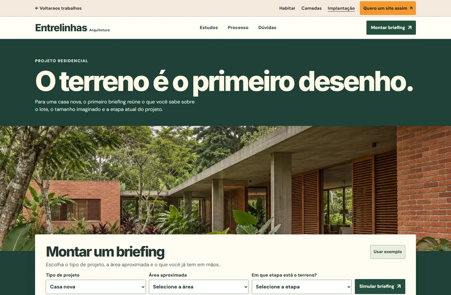

Habitar
Interiores a partir da rotina, dos móveis existentes e da circulação.
Abrir demonstraçãoTrês formas de apresentar um estúdio residencial. Escolha uma versão para explorar os estudos e simular um briefing.

Interiores a partir da rotina, dos móveis existentes e da circulação.
Abrir demonstração
Reforma organizada pelo que deve ficar, o que muda e o que pode esperar.
Abrir demonstração
Casa nova a partir do terreno e do programa, com briefing na abertura.
Abrir demonstração